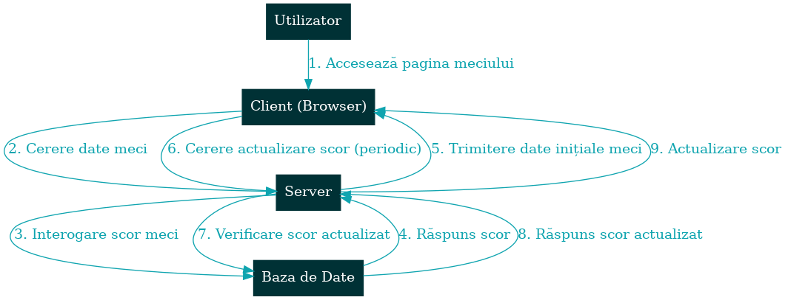
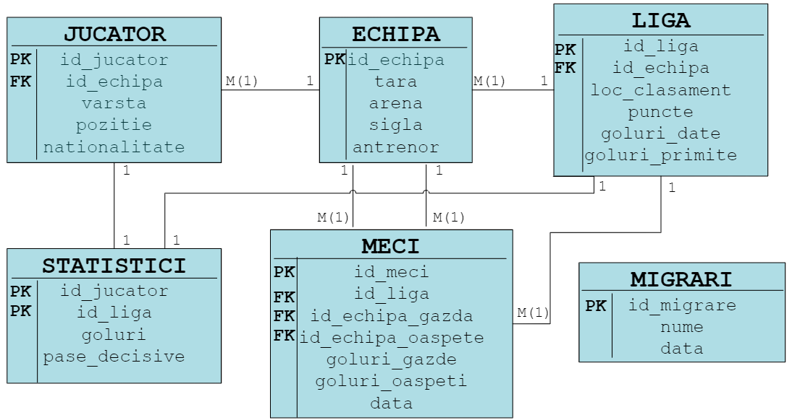

Scurtă descriere a soluției de implementare
- Front-End: HTML, CSS, și JavaScript pentru interfața utilizatorilor.
- Back-End: PHP pentru procesarea datelor și logica aplicației. Folosește PHP pentru a manipula datele din MySQL și pentru a afişa datele actualizate în timp real.
- Baza de date: MySQL pentru stocarea datelor despre meciuri, echipe, jucători, și utilizatori.
- Actualizarea datelor în timp real: Ajax pentru a actualiza scorurile și evenimentele în timp real pe paginile de meciuri.
Diagramă de secvență

Structura și Funcționalitățile Principale
- Pagina principală: Va afișa lista meciurilor în desfășurare, meciurile viitoare și rezultatele recente.
- Pagina unui meci: Detalii despre fiecare meci, cum ar fi scorul în timp real, echipele, marcatorii, evenimentele importante (de exemplu, goluri, cartonașe).
- Clasamente: Clasamente pentru fiecare ligă sau competiție, actualizate automat în funcție de rezultate.
- Echipe și Jucători: Profiluri de echipe și jucători, cu statistici și informații relevante.
Roluri
- Administrator: Va afișa lista meciurilor în desfășurare, meciurile viitoare și rezultatele recente.
- Utilizator: Are acces la detalii despre fiecare meci sau campionat, precum scorul în timp real, echipele, marcatorii, evenimentele importante (de exemplu, goluri, cartonașe).
Diagrama ERD
